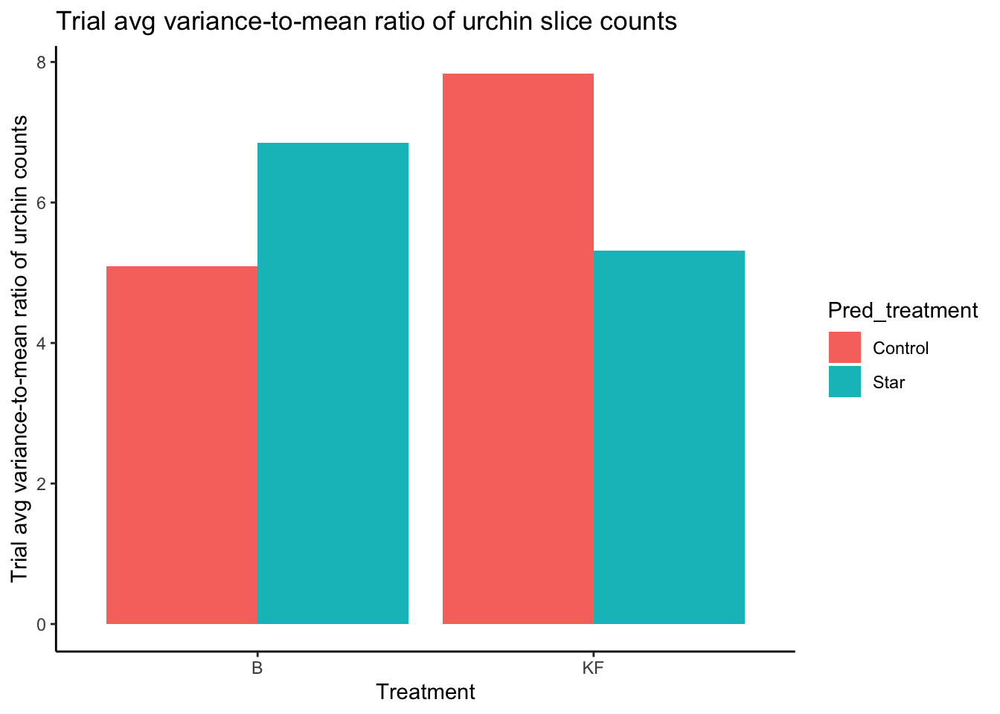

Select results and interpretation from PycnoPie experiment run in the summer of 2024 on indirect effects of Pycnopodia helianthoides on grazing rates of red urchins from kelp forests and urchin barrens. Cleaning and processing scripts can be found in PycnoPie/scripts/00_cleaning.R and PycnoPie/scripts/01_manipulation.R
Kelp grazing data
Raw data: % change in kelp grazed by urchins from kelp forest/barrens with/without a star
Model data: General linear mixed model for % change in kelp grazed
Code
#building modelkelp_mod <- glmmTMB::glmmTMB(pcnt_grazed ~ Urch_habitat_treatment + Pred_treatment + Urch_habitat_treatment*Pred_treatment + (1| Trial/Tank/Kelp_ID), data = kelp_processed,family =gaussian(link ="identity"))sjPlot::tab_model(kelp_mod)#plots of estimatespredicted_kelp_mod <-ggpredict(model = kelp_mod, terms =c("Pred_treatment","Urch_habitat_treatment"))ggplot(predicted_kelp_mod, aes(group, predicted, fill = x)) +geom_bar(stat ="identity", position =position_dodge()) +geom_errorbar(aes(ymin = conf.low, ymax = conf.high), position=position_dodge()) +labs(title ="Predicted values of % kelp grazed from GLMM", x ="Urchin habitat", y ="% kelp grazed", fill ="Pred treatment") +theme_classic() +scale_fill_manual(values =c('#DAF7A6','#5A5A5A') ) +ylab("% Change Kelp Grazed") +labs(fill ="Predator treatment")
pcnt_grazed
Predictors
Estimates
CI
p
(Intercept)
16.98
14.17 – 19.79
<0.001
Urch habitat treatment [KF]
-16.07
-20.04 – -12.10
<0.001
Pred treatment [Star]
-8.46
-12.43 – -4.49
<0.001
Urch habitat treatment [KF] × Pred treatment [Star]
6.85
1.23 – 12.46
0.017
Random Effects
σ2
172.81
τ00Kelp_ID:Tank:Trial
43.19
τ00Tank:Trial
6.63
τ00Trial
0.00
ICC
0.04
N Kelp_ID
12
N Tank
4
N Trial
12
Observations
576
Marginal R2 / Conditional R2
0.216 / 0.245
The fixed effects of urchin habitat, predator treatment, and the interaction term are all significant in the GLMM for % kelp grazed. The plot of predicted values from the GLMM shows clearer trends in grazing than the boxplot of raw data. Both kelp forest and barren urchins reduce grazing around a star. Urchins from a barren reduce grazing more than urchins from a kelp forest. The reduction of grazing of kelp forest urchins around a star may be enough to allow for net kelp growth (note negative bar - this may be due to mucus production or growth; regardless, grazing suppression in this treatment was sufficient to allow for positive increase in kelp mass).
Behavior data
General distribution of urchins in tanks
Code
#general distribution of urchin count in pie slicesggplot(behavior_processed, aes(x = slice,y = urchin_slice_count)) +geom_point(aes(colour = Treatment),position ="jitter") +geom_smooth(method ="lm") +facet_wrap(vars(Treatment)) +labs(title ="General distribution of urchins in slices for different treatments",x ="Slice",y ="Count of urchins in pie slice",caption ="Note: inflow is at slice 1, slice 0 denotes inner circle") +theme_classic()

Variance to mean ratio for urchin count in each pie slice
Code
#VARIANCE TO MEAN RATIO of urchin distribution over treatments#NOTE: v-to-mean of 1 = random, > 1 = clumped, < 1 = uniform#should i find the variance of the var to mean ratios to find trial scale clustering dynamics?ggplot(behavior_processed, aes(x = Urch_habitat_treatment,y = var_to_mean,fill = Pred_treatment)) +geom_bar(stat ="identity", position =position_dodge()) +labs(title ="Variance to mean ratio of urchin slices across treatments",x ="Treatment",y ="Variance of percentage of urchins per slice") +theme_classic()#var-to-mean boxplotggplot(behavior_processed, aes(x = Urch_habitat_treatment,y = var_to_mean,fill = Pred_treatment)) +geom_boxplot() +labs(title ="Variance to mean ratio of urchin slices across treatments",x ="Treatment",y ="Variance of percentage of urchins per slice") +theme_classic()
Crevice use
Code
#histogramsggplot(behavior_processed) +geom_histogram(aes(x = pcnt_in_crev, fill = Pred_treatment),position ="dodge") +facet_wrap(vars(Urch_habitat_treatment, Pred_treatment)) +labs(title ="Histogram for % of urchins in crevice") +theme_classic()ggplot(behavior_processed) +geom_histogram(aes(x = trial_avg_pcnt_in_crev, fill = Pred_treatment),position ="dodge") +facet_wrap(vars(Urch_habitat_treatment, Pred_treatment)) +labs(title ="Histogram for trial avg % of urchins in crevice") +theme_classic()
Code
#bar/boxplots:#bar charts of crevice use (looks same for behavior scale and trial scale)ggplot(behavior_processed, aes(x = Pred_treatment, y = trial_avg_pcnt_in_crev)) +geom_bar(aes(fill = Urch_habitat_treatment), position =position_dodge(), stat ="identity") +geom_errorbar(aes(ymin = trial_avg_pcnt_in_crev-trial_sd_pcnt_in_crev, ymax = trial_avg_pcnt_in_crev+trial_sd_pcnt_in_crev,color = Urch_habitat_treatment),position =position_dodge()) +labs(title ="Bar chart of % of urchins in crevice") +theme_classic()#boxplot of crevice use - looks diff for behavior scaleggplot(behavior_processed) +geom_boxplot(aes(x = Pred_treatment, y = trial_avg_pcnt_in_crev, fill = Urch_habitat_treatment)) +labs(title ="Box plot of % of urchins in crevice") +theme_classic()
Issues with cause-effect (urchin influencing star position or star influencing urchin position?) and dynamic nature of features within a tank (upstream/downstream, distance to star) limit fixed effects for behavioral model